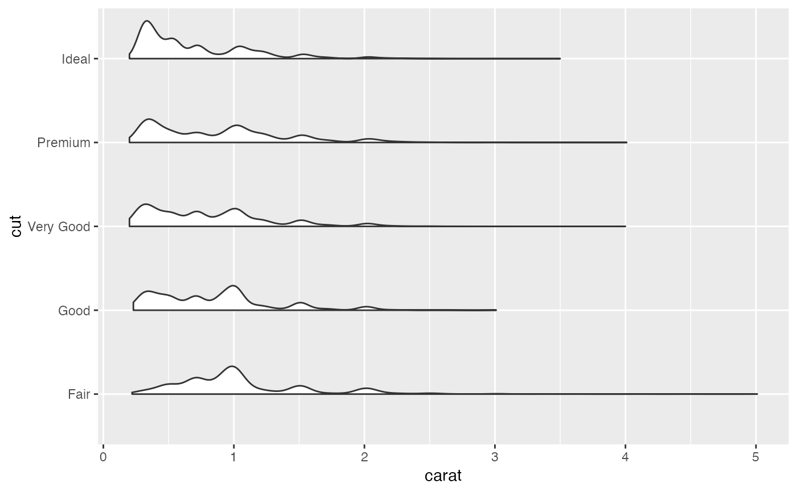

ggplot Flat Violin
geom_flat_violin( mapping = NULL, data = NULL, stat = "ydensity", position = "dodge", trim = TRUE, scale = "area", show.legend = NA, inherit.aes = TRUE, ... )
| mapping | A value |
|---|---|
| data | A value |
| stat | A value |
| position | A value |
| trim | A value |
| scale | A value |
| show.legend | A value |
| inherit.aes | A value |
| ... | A value |
Copy-pasted from https://gist.githubusercontent.com/benmarwick/2a1bb0133ff568cbe28d/raw/fb53bd97121f7f9ce947837ef1a4c65a73bffb3f/geom_flat_violin.R somewhat hackish solution to: https://twitter.com/EamonCaddigan/status/646759751242620928 based mostly on copy/pasting from ggplot2 geom_violin source: https://github.com/hadley/ggplot2/blob/master/R/geom-violin.r The original seems to be: sourced from: https://gist.github.com/dgrtwo/eb7750e74997891d7c20, Author is David Robinson. A key internal function for the raincloud plots used as a plotting option in this package. For information on raincloud plots see: Allen, M., Poggiali, D., Whitaker, K., Marshall, T. R., & Kievit, R. A. (2019). Raincloud plots: a multi-platform tool for robust data visualization. Wellcome open research, 4, 63. doi:10.12688/wellcomeopenres.15191.1
ggplot(diamonds, aes(cut, carat)) + geom_flat_violin() + coord_flip()